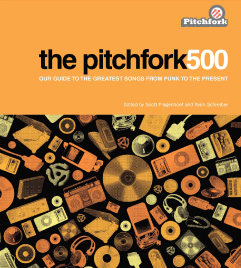

Music Blog Zeitgeist
I've been enjoying all of the year-end 'best of' lists. My favorite
so far has been the Hype Machine Music Blog Zeitgeist. Especially since
it is so easy to listen to them:
I've also been enjoying the Pitchfork 500 - which is a list of the greatest songs since 1977 (the year I graduated from High School).  This list is a bit harder to listen to than the Hype Machine lists - but I've been building up a Spotify playlist - the pitchfork500 on spotify: (I'm only up to 1979), but if you are a spotify listener feel free to listen. The song list is posted on from closer to near but you really will want to read the full book, each song has a 2 or 3 paragraph description of why the song was picked, why it was influential, where it fits in the evolving genre hierarchy.
That's very nice, listening to it right now. A few points:
* are you doing this by hand? I'm guessing so. You'd think they'd provide a semi-automated way to go from textual lists to spotify playlists given their USP of having ridiculous amounts of music on tap. Or at least an API that would let you build such a thing.
* "Ca plane pour moi" by Presidents of the USA? A mistake or calculated decision based on Plastic Bertrand's version not being available?
* Reminds me of the "This is Uncool" book, which I own, though it has a more idiosyncratic take as well as a UK bias. Google reveals a few people have started tagging the songs from it on last.fm:
Book: http://www.amazon.co.uk/This-Uncool-Greatest-Singles-Since/dp/1844031055
Songlist: http://www.rocklistmusic.co.uk/thisisuncool.htm
Last.fm tag: http://www.last.fm/tag/this%20is%20uncool
Posted by dave on January 19, 2009 at 08:38 AM EST #
Dave:
Yes, I'm doing this by hand ... Spotify doesn't currently offer an API that allows the creating or manipulating of playlists. (Maybe they'll add something like this soon, but last time I asked, it wasn't on their near term roadmap).
"Ca plane pour moi" yep - a few tracks are not in the spotify catalog so I have to pick substitutes.
Thanks for the 'uncool greatest singles' tip too.
Posted by Paul Lamere on January 19, 2009 at 08:43 AM EST #
really looking forward to this album. lovely track.
Posted by Bristol Gigs on January 22, 2009 at 10:06 AM EST #